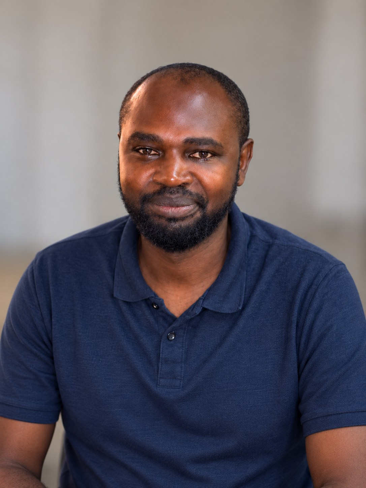
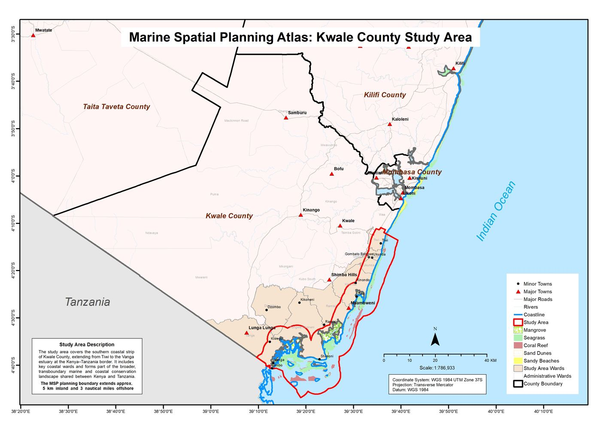
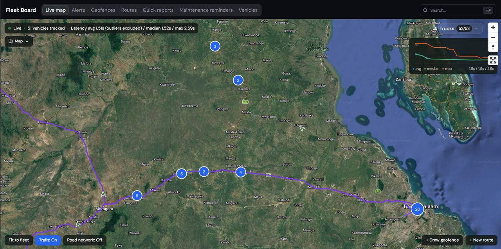
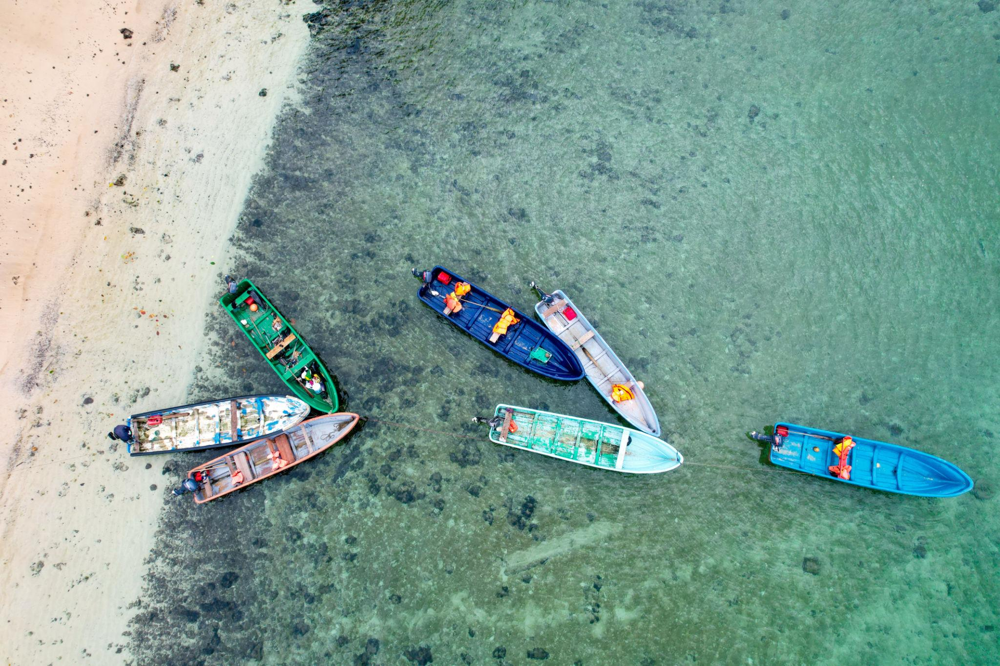

Turning satellite imagery and field data into decisions people can act on.
Marine spatial planning · environmental MRV & carbon accounting · water-sector GIS
Eleven years designing spatial data systems across East Africa, from national land-cover baselines built for Kenya's greenhouse-gas accounting, to a marine spatial planning atlas for UNEP's Nairobi Convention, to GIS-readiness roadmaps for water utilities. The thread running through all of it is simple: take earth-observation and field data, structure it into a spatial database, and deliver it as a map or dashboard someone can actually use.

Selected Work
Five projects spanning marine spatial planning, coastal imagery and fishing boat mapping, water-sector GIS, national land-cover analysis, and spatial software.

Marine Spatial Planning Atlas for Kwale & Lamu Counties

FleetPulse FMS

Pemba Island Fishing Boat Mapping
Articles
Notes on the technical problems that come up in the GIS and spatial-systems work above, written as I run into them.
All articles →